Softmax Linear Units
AUTHORS
Nelson Elhage ∗ †, Tristan Hume ∗ , Catherine Olsson ∗ , Neel Nanda ∗ §, Tom Henighan†, Scott Johnston†, Sheer El Showk†, Nicholas Joseph†, Nova DasSarma†, Ben Mann†, Danny Hernandez, Amanda Askell, Kamal Ndousse, Andy Jones, Dawn Drain, Anna Chen, Yuntao Bai, Deep Ganguli, Liane Lovitt, Zac Hatfield-Dodds, Jackson Kernion, Tom Conerly, Shauna Kravec, Stanislav Fort, Saurav Kadavath, Josh Jacobson, Eli Tran-Johnson, Jared Kaplan, Jack Clark, Tom Brown, Sam McCandlish, Dario Amodei, Christopher Olah‡
AFFILIATION
Anthropic
PUBLISHED
June 27, 2022
- Core Research Contributor; † Core Infrastructure Contributor; § Work done while at Anthropic; ‡ Correspondence to colah@anthropic.com; Author contributions statement below.
1. Introduction
As Transformer generative models continue to gain real-world adoption [1, 2, 3, 4, 5] , it becomes ever more important to ensure they behave predictably and safely, in both the short and long run. Mechanistic interpretability – the project of attempting to reverse engineer neural networks into understandable computer programs – offers one possible avenue for addressing these safety issues: by understanding the internal structures that cause neural networks to produce the outputs they do, it may be possible to address current safety problems more systematically as well as anticipating future safety problems.
Until recently mechanistic interpretability has focused primarily on CNN vision models [6] , but some recent efforts have begun to explore mechanistic interpretability for transformer language models [7, 8] . Notably, we were able to reverse-engineer 1 and 2 layer attention-only transformers [7] and we used empirical evidence to draw indirect conclusions about in-context learning in arbitrarily large models [8] .
Unfortunately, it has so far been difficult to mechanistically understand large models due to the difficulty of understanding their MLP (feedforward) layers. This failure to understand and interpret MLP layers appears to be a major blocker to further progress. The underlying issue is that many neurons appear to be polysemantic [9, 10] , responding to multiple unrelated features. Polysemanticity has been observed before in vision models, but seems especially severe in standard transformer language models. One plausible explanation for polysemanticity is the superposition hypothesis [10] , which suggests that neural network layers have more features than neurons as part of a “sparse coding” strategy to simulate a much larger layer. If true, this would make polysemanticity a functionally important property and thus especially difficult to remove without damaging ML performance.
In this paper, we report an architectural change which appears to substantially increase the fraction of MLP neurons which appear to be "interpretable" (i.e. respond to an articulable property of the input), at little to no cost to ML performance. Specifically, we replace the activation function with a softmax linear unit (which we term SoLU) and show that this significantly increases the fraction of neurons in the MLP layers which seem to correspond to readily human-understandable concepts, phrases, or categories on quick investigation, as measured by randomized and blinded experiments. We then study our SoLU models and use them to gain several new insights about how information is processed in transformers. However, we also discover some evidence that the superposition hypothesis is true and there is no free lunch: SoLU may be making some features more interpretable by “hiding” others and thus making them even more deeply uninterpretable. Despite this, SoLU still seems like a net win, as in practical terms it substantially increases the fraction of neurons we are able to understand.
Although preliminary, we argue that these results show the potential for a general approach of designing architectures for mechanistic interpretability: there may exist many different models or architectures which all achieve roughly state-of-the-art performance, but which differ greatly in how easy they are to reverse engineer. Put another way, we are in the curious position of being both reverse engineers trying to understand the algorithms neural network parameters implement, and also the hardware designers deciding the network architecture they must run on: perhaps we can exploit this second role to support the first. If so, it may be possible to move the field in a positive direction by discovering (and advocating for) those architectures which are most amenable to reverse engineering.
This paper is organized as follows. In Section 2, we give an overview of our key results. In Section 3, we provide background on mechanistic interpretability, the role of interpretable neurons, the challenge of polysemanticity and the superposition hypothesis. In Section 4 we motivate and introduce SoLU. In Section 5 we present experimental results showing that SoLU gives performance roughly equivalent to standard transformers, as measured by loss and downstream evaluations. In Section 6 we run the experiments showing that SoLU leads to MLP neurons that are easier to interpret, and also present several interpretability discoveries that we were able to make with SoLU models and could not make without them. Section 7 reviews related work, and Section 8 discusses the bigger picture and possible future directions.
2. Key Results
SoLU increases the fraction of MLP neurons which appear to have clear interpretations, while preserving performance. Specifically, SoLU increases the fraction of MLP neurons for which a human can quickly find a clear hypothesis explaining its activations from 35% to 60%, as measured by blinded experiments – although the gain is smaller for our largest models (see Section 6.2). This gain is achieved without any loss in performance: test loss and NLP evals are approximately the same for SoLU and non-SoLU models (see Section 5)
SoLU’s benefits may come at the cost of “hiding” other features. Despite the benefits mentioned above, SoLU is potentially a double-edged sword. We find theoretical and empirical evidence that it may “hide” some non-neuron-aligned features by decreasing their magnitude and then later recovering it with LayerNorm (see Sections 4.3 and Section 6.4) . In other words, SoLU causes some previously non-interpretable features to become interpretable, but it may also make it even harder to interpret some already non-interpretable features. On balance, however, it still seems like a win in that it pragmatically increases our understanding.
Architecture affects polysemanticity and MLP interpretability. Although it isn't a perfect solution, SoLU is a proof of concept that architectural decisions can dramatically affect polysemanticity, making it more tractable to understand transformer MLP layers. This suggests that exploring how other architectures affect polysemanticity could be a fruitful line of further attack. More generally, it suggests that designing models for mechanistic interpretability – picking architectures we expect to be easier to reverse engineer – may be a valuable direction.
An overview of the types of features which exist in MLP layers. SoLU seems to make some of the features in all layers easily interpretable. Prior to this, we'd found it very difficult to get traction on rigorously understanding features in MLP layers. In particular, despite significant effort, we made very little progress understanding the first MLP layer in any model. Simply having a sense of what kinds of features to expect in different layers was a powerful tool in reverse engineering models in the original circuits thread [6] , and this moves us in a similar direction. We find that early features often deal with mapping raw tokens to semantic meaning (e.g. dealing with multi-token words, or tokens in different languages), more abstract features in middle layers, and features involved in mapping abstract concepts back to raw tokens in late layers. Detailed discussion can be found in Section 6.3.
Evidence for the superposition hypothesis. Very little is known about why polysemanticity occurs. In the mechanistic interpretability community, superposition is often treated as the default hypothesis simply because it seems intuitively more compelling than other explanations, but there is little evidence. Our SoLU results seem like moderate evidence for preferring the superposition hypothesis over alternatives.
3. Background
Before presenting the SoLU results, it is worth going through why understanding the MLPs in transformer language models is hard, and specifically why the superposition hypothesis is plausible and thus why polysemanticity might be difficult to avoid.
3.1 The Importance of Understanding Activations
First of all, why is it even important to understand neurons/activations? Previous work on language model mechanistic interpretability was (for example) able to discover induction heads without needing to understand activations. And ultimately, don’t we only need to understand the parameters, which provide a complete description of the neural net?
A useful analogy might be to think of the parameters as a compiled computer program that we’re trying to understand, and the activations as variables in that program. Just as a line of code in a computer program only makes sense if you understand what the variables represent, a parameter in a neural network can only be understood if you understand the activations it links together. This idea was originally articulated by Voss et al. [11] , and is described in more depth in a informal note on intuition accompanying this paper. Concretely, there are many more parameters than activations, so the activations seem like a more likely “key” to what’s going on.
There are special cases where it's possible to side-step understanding activations, by rewriting a neural network into an equivalent model that doesn't make reference to intermediate activations. This is how we were able to reverse engineer attention-only transformers previously. However, the non-linear structure of MLP layers is not amenable to such tricks: if we want to understand transformers with MLP layers, it appears we must figure out how to understand what the activations of MLP layers encode.
3.2 Decomposing Activations and the Role of Bases
To get to polysemanticity and the superposition hypothesis, it’s first useful to talk about bases in neural network layers. The vector space of a neural network layer’s activations is called the "representation." For toy low-dimensional neural networks, it may be possible to explicitly visualize or analyze this space [12] . But as the dimensionality increases, the curse of dimensionality takes hold and the volume of the space exponentially increases. The only path we see to fully understand such a representation is to decompose it into independently understandable components, which we'll call features. Finding such a decomposition is the difference between needing to understand N features and exp( N ) representational volume. (This might be seen as similar to how,
in reverse engineering a computer program, we don't just think of the program's state space as a highdimensional vector: we decompose it into a set of variables representing different things.) One approach would be to search for a meaningful basis (or meaningful directions that might be part of a basis). This approach is often taken in the context of word embeddings (e.g. [13] ), although also in other contexts (e.g. [14] ). For word embeddings, there doesn't appear to be an alternative: word embeddings generally have what we call a non-privileged basis [7] , since it can be freely rotated. 1 As a result, such representations don't come with any "special basis" which might hint at how to understand them. The correct basis must be discovered. For example, in a word embedding, one might define a gender direction by subtracting "man" and "woman" [13] .
In contrast, many neural networks have some representations with a privileged basis [7] . In these representations, something about the network makes the default basis special. For example, if the layer has a coordinate-wise non-linear activation function (eg. ReLU), this “breaks the symmetry," distinguishing the specific basis of the activations as the unique basis in which the nonlinearity is applied. This doesn't guarantee that features will align with the basis, but it makes it plausible. In many ways, this is the ideal outcome if possible: not only does it allow us to side-step the difficult question of how to find a meaningful basis, but mechanistically reasoning about neural networks is easier when the basis one is reasoning in aligns cleanly with computation like activation functions.
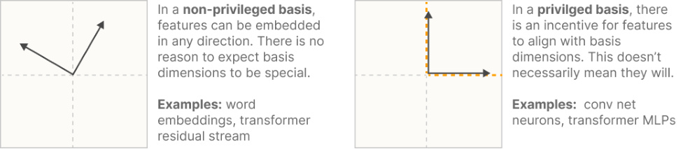
In transformers, the token embeddings, residual stream, and attention vectors are non-privileged, while MLP layer activations are privileged.
3.3 Neurons and Polysemanticity
We call the dimensions of a representation with a privileged basis "neurons." We often find neurons which map extremely cleanly to clear concepts. In the context of vision, these have ranged from low-level neurons like curve detectors [15] and high-low frequency detectors [16] , to more complex neurons like oriented dog-head detectors or car detectors [10] , to extremely abstract neurons corresponding to famous people, emotions, geographic regions, and more [17] . The claim that some neurons really do correspond to interpretable features is crucial to what kinds of interpretability research make sense, so it's worth noting that these interpretations aren't just casual claims made on superficial evidence. In some cases, these interpretations have held up to
detailed investigation: Cammarata et al. [15, 18] spend two papers investigating a handful of curve detector neurons and the circuits that implement them, using seven different lines of evidence to corroborate that the neurons really are curve detectors, with the goal of dispositively establishing that at least some neurons really are interpretable.
However, there are also many neurons which don't appear to correspond to understandable concepts – and we’ve found this to be especially true in transformer language models. One possibility is that these are in some sense alien features: they actually are the true features and they're just difficult for humans to understand (see [19] and discussion [20] ). Sometimes features which are initially incomprehensible become obvious once the right hypothesis is proposed (e.g. [16] ), so it's certainly possible! But many of these neurons appear to respond to several unrelated but individually understandable features, such as a neuron which responds to cat heads, fronts of cars, and paws. While we can't totally rule out that there isn't some deep commonality between a cat's paw and the front of a car, it seems like the simpler explanation is that the network has grouped several unrelated features together. We call these polysemantic neurons [9, 10] .
Note that polysemanticity is what one would expect to observe if features weren't actually aligned with the privileged basis. But why wouldn't the features align with the neurons? While it could simply be chance, there's an alternative option: the superposition hypothesis [21, 22, 10] .
3.4 The Superposition Hypothesis
Roughly, the idea behind the superposition hypothesis is that neural networks "want to represent more features than they have neurons," so they exploit a property of high-dimensional spaces to simulate a model with many more neurons. (Note that as a matter of terminology we use "polysemanticity" to refer to the empirical phenomenon of neurons responding to multiple features, and "superposition" to refer to the hypothesis described here.)
If true, the superposition hypothesis means there is no basis in which activations are interpretable: searching for an interpretable basis is fundamentally the wrong framing. Especially important features might get dedicated neurons, but most features don't align with neurons because they need to share and can't have a dedicated one.
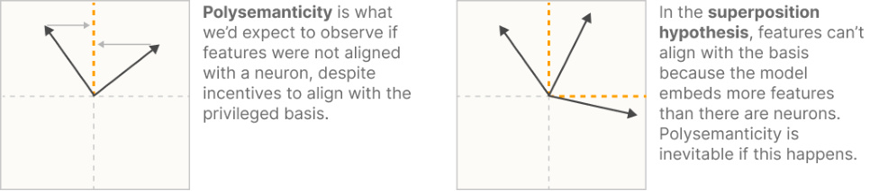
This section isn't a formal argument for the superposition hypothesis, but it's worth trying to sketch out the intuition for why it might be plausible. We start with the following intuitions about neural networks and features:
-
Neural networks represent features as directions in activation space. Since neural networks are primarily built from matrix multiplications, it is both easier to construct a feature by embedding it as a direction and easier to use it (rather than some non-linear representation).
-
There are far more possible features than neurons. These features vary in importance. For example, in the context of language, every person who lives or has lived could theoretically come up in text, and our models don't have billions of neurons. But there's a wide variety in how famous and influential people are, and how much they influence the text around them (the feature importance).
-
Since there are a large number of parameters associated with every neuron, the most efficient way to encode many facts in parameters may not align with neurons. Language models in particular are incentivized to store large amounts of information in their parameters. Having a neuron corresponding to a single feature may "waste" parameters that could be used to store additional facts.
-
Features are sparse. Continuing the example of people as potential features from above, most tokens in text or positions in an image don't contain any given person (or even a person at all). This is the same observation as the sparsity of features in natural image statistics that motivates classic work on sparse coding (see e.g. [23] ).
We can further combine these intuitions with the following ideas from mathematics:
-
Almost Orthogonal Vectors. Although it's only possible to have n orthogonal vectors in an - n dimensional space, it's possible to have exp( n ) many "almost orthogonal" ( < ϵ cosine similarity) vectors in high-dimensional spaces. See the Johnson–Lindenstrauss lemma [24] .
-
Compressed sensing. In general, if one projects a vector into a lower-dimensional space, one can't reconstruct the original vector. However, this changes if one knows that the original vector is sparse. In this case, it is often possible to recover the original vector. This situation is studied by a line of research called compressed sensing.
Together, these give us the basic ingredients for the superposition hypothesis. Ideally, networks could achieve a lower loss if they could represent more features. The number of features they can represent as orthogonal direction is limited by the number of neurons. However, it may be the case that representing more features is worth the cost of having "interference" between them because they aren't exactly orthogonal, especially if sparsity means that this interference is uncommon.
That is, a small neural network may be able to approximately "simulate" a sparse larger model, at the cost of some "interference" (figure below). And if it’s the case that the underlying data the model is trying to represent genuinely has a lot of sparse features, then this may be the best thing for the model to do.
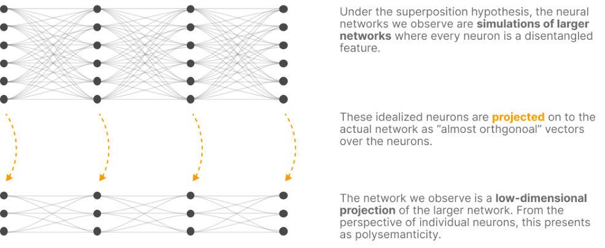
To be clear, the presence of nonlinear activation functions (the “privileged basis”) does create an incentive for features to align with this basis and not get superposed. But if the gains to sparse coding are large enough, this incentive will get overwhelmed. And when there isn’t a privileged basis (as in word embeddings and residual streams), we should expect the pressure for superposition to be even stronger.
UPDATE
Since publishing this paper, we wrote up a more detailed discussion of superposition in our paper Toy Models of Superposition. In general, our understanding of superposition was much clearer in the Toy Models paper, and we see it as superseding this discussion.
3.5 What Can We Do About Superposition?
If we believe the superposition hypothesis, what should we do if we want to understand models? Broadly, there are two approaches:
-
Create models with less superposition. Perhaps by making the right architectural decisions,
-
regularizations, or making other design choices, we can reduce the need for superposition in neural networks.
-
Find a way to understand representations with superposition. An alternative to avoiding polysemanticity is to accept that models will have it and try to infer the higher-dimensional structure we believe exists in activation vectors, possibly using ideas from compressed sensing.
This paper will focus on the first approach, creating models with less superposition. Our intuition is that if it's possible to avoid superposition at training time, that would be easier than trying to deal with superposition after the fact. In the next section, we will introduce SoLU, an activation function designed to reduce polysemanticity and superposition in models.
4. SoLU: Designing for Interpretability
The goal of mechanistic interpretability is to reverse engineer neural networks. But we aren't just the reverse engineers – we're also the hardware designers. Just as a computer program might be easier to reverse engineer if it makes use of special CPU instructions designed for a particular use case, the right neural network architecture may make neural networks easier to reverse engineer.
We can apply this line of thinking to our present challenge. We need to understand MLP layer activations, but this is difficult because transformer MLP neurons are often very polysemantic, possibly due to feature superposition. And so the question is, how can we create a neural network architecture which will encourage features to align with neurons, and discourage polysemanticity?
4.1 Properties that May Reduce Polysemanticity
Transformer MLP layers are not designed to avoid polysemanticity. As a result, there are quite a few architectural properties that could plausibly reduce polysemanticity and haven't really been explored. We’re aware that decreasing polysemanticity might harm performance (due to the superposition hypothesis), but tactically speaking it makes sense to look for ways to decrease polysemanticity, and then see if we can find any that don’t harm performance. Although we won't try all of these in this paper, here are a few potential ways to decrease polysemanticity, along with argument for why they may help:
Activation Sparsity: Polysemantic neurons must fire more often, since they represent multiple things. Additionally, for a polysemantic neuron to be useful, the activations of other neurons must disambiguate it. This means that polysemanticity requires more neurons to fire at the same time. Put another way, superposition requires a gap between the sparsity of the underlying features and the sparsity of the neurons representing them. This suggests that encouraging activation sparsity may make it harder for neurons to be polysemantic. This sparsity could be achieved by using a different activation function, or by using a regularizer. (It's also worth noting that sparsity needs to be defined with respect to a basis; this is a very general argument for why it's plausible that any kind of sparsity might encourage a privileged basis.)
Lateral Inhibition / Co-Occurrence Sparsity: It's possible to design activation functions (e.g. softmax), where one neuron firing reduces the amount other neurons fire. This encourages a very specific kind of (approximate) activation sparsity which one might call "co-occurrence sparsity." It isn't just that on average the neurons are sparse, it's that in any particular instance, relatively few neurons fire simultaneously. This may be an even stronger way to discourage polysemanticity, by making it hard for other neurons to disambiguate a neuron's meaning. It's important to think through the exact mechanism of lateral inhibition to ensure that the architecture is truly creating a situation where a few neurons "win"
and sparsity emerges, rather than all neurons inhibiting each other resulting in highly diffuse small activations.
-
Weight Sparsity: If one imagines two features in adjacent layers of a neural network, it seems natural to think there's some "ideal weight" between them. If every feature corresponds to a neuron (as in the imagined ideal model in Section 3.4), this ideal weight would simply correspond to an entry in the weight matrix. But if one or both of the features is represented in a non-neuron aligned way, the ideal weight will start to be "smeared out" across many entries in the weight matrix. As a result, we should expect layers with polysemantic neurons to have more small weights, and layers where features are aligned with the basis to have a smaller number of "more concentrated" large sparse weights. This means that weight sparsity may be a way to discourage polysemanticity and encourage a privileged basis. However, it seems to us that weight sparsity only makes sense when both the input and output are privileged bases. In a transformer, all weights have the residual stream as either an input or output, and in our conceptualization of transformers, the residual stream is necessarily polysemantic and not basis aligned. As a result, we don't believe weight sparsity is suitable for a standard transformer architecture.
-
Superlinear Activation Functions: A superlinear activation function is one where increasing the preactivation value of a neuron increases its activation at a greater than linear rate while in the activating regime, holding other neurons fixed. Examples include ReLU( x )2 , softmax( x ) ∗ x , and exp( x ) . Consider what happens if you spread a feature over N neurons with this activation function. Since f ( x )
-
f ( xN ~~) <~~ N ~~, spreading a feature across neurons will automatically~~ " ~~shrink~~ " ~~it, requiring either larger~~ activations or larger output weights. This makes it harder for non-basis aligned features to co-exist with basis-aligned ones. It also makes it worse for a polysemantic neural network if two features overlapping in the same neuron co-occur, since f ( a + b ) > f ( a ) + f ( b ) means the "interference" between the features would be greater than the sum of its parts.
-
Change Neurons per FLOP / param: If one accepts the superposition hypothesis, the reason we have polysemanticity is that there aren't enough neurons for all the features the model would ideally like to represent. Unfortunately, naively making models bigger may not fix this, since more capable models may want to represent more features. Instead, we want to create more neurons without making models larger. Some architectural approaches may allow for this. (In some ways this seems like the most attractive way to reduce polysemanticity, if the hypothesis is right, since it's "giving the neural net what it wants" rather than "forcing it to do something it doesn't want.")
4.2 The SoLU Activation Function
It turns out that several of these properties – lateral inhibition, as well as approximate sparsity and superlinearity – can be achieved with a relatively simple change to the MLP activation function.
Modern transformers often use the GeLU activation function. Recall that GeLU is approximated closely by sigmoid(1.7 x ) ∗ x . What if we replaced sigmoid with softmax, its natural extension from binary to multivariate probabilities? We call this activation function a "softmax linear unit" or SoLU:
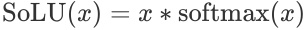
To see why this may discourage polysemanticity and superposition, it's helpful to consider a few examples. Firstly, when SoLU is applied to a vector of large and small values, the large values will suppress smaller values:
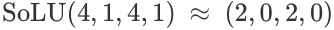
Perhaps more importantly, large basis aligned vectors are preserved, while a feature spread across many dimensions will be suppressed to a smaller magnitude:
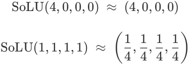
4.3 LayerNorm
Our preliminary experiments found that simply using a SoLU activation function seemed to make neurons much more interpretable, but came at a major performance cost. Generally, SoLU models without any other changes had performance equivalent to a model 30–50% smaller than their actual size, with larger models being affected more. This is exactly what we’d expect to see if the superposition hypothesis was true – we can decrease polysemanticity, but doing so harms the network’s ML performance.
However, we found empirically that this performance penalty can be fixed, while also preserving the interpretability gains, by applying an extra LayerNorm after the SoLU, similar to [25] . This greatly improves ML performance, so for the majority of our experiments the function we actually apply is2 :
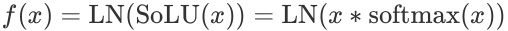
We originally added LayerNorm on the intuition that it might fix issues with activation scale and improve optimization. Unfortunately, we now believe that at least part of the reason for the performance improvement is the extra LayerNorm may allow superposition to be smuggled through in smaller activations. However, under this theory, the combined operation would still tend push at least some features to single neurons with large activations, potentially allowing increased interpretability to coexist with superposition.
We'll discuss this empirically later, but for now note that LayerNorm is invariant to scaling the input, since LN( x )′ divides by σ ( x )′ and σ ( αx ) =′ ασ ( x )′ . This means that if an entire vector is small because it was very distributed and SoLU suppressed it, it will be rescaled to be larger.
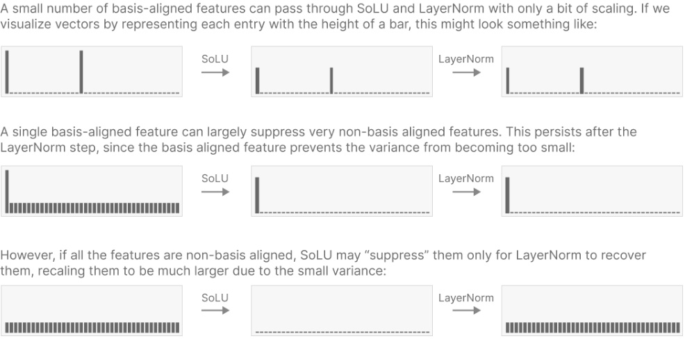
More generally, it means that the denominator of softmax has no effect on the final behavior of the model (although it does change the activations we observe pre-LayerNorm). Training a model with an exponential activation would be identical if we ignored intermediate activations:
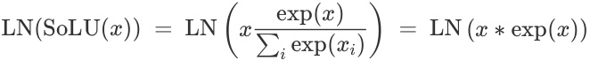
4.4 Parallelism Implementation Details
Our larger models are trained using tensor parallelism, such that MLP activations are never present on a single accelerator. For those models, we split both the softmax and the layer norm to act over a subset of dimensions, allowing each processor to operate locally without additional communication. We report results for these "blocked" models, but in our informal experiments, this blocking does not appear to have a substantial effect on either ML performance or our interpretability results.
5. Results on Performance
In this section we confirm that SoLU (the version with LayerNorm) has comparable ML performance to a baseline model. This is important because interpretability changes are unlikely to be widely adopted if they significantly hurt model performance. 3 The largest language models are now estimated to cost millions of dollars to train, persuading companies to adopt such a change in production systems would mean asking them to spend millions of dollars more to achieve a model of equivalent performance. This seems like a tough sell, even if the interpretability improvements were dramatic. Thus, it seems important to confirm competitiveness.
To demonstrate this, we train transformer language models with and without SoLU for a range of different sizes, and evaluate both the loss and the performance on the following downstream NLP tasks: Lambada [26] , ARC [27] , OpenBookQA [28] , TriviaQA [29] , arithmetic, MMLU [30] , and HellaSwag [31] .
Our baseline model uses an architecture similar to GPT-3 [1] and Gopher [5] , and identical to what is described in our own previous language model baselines [32, 33] . We train models ranging from 1 layer to 64 layers (approximately 50 billion parameters), in successive factors of roughly 4 in parameters. Our SoLU models have all the same hyperparameters and architectural details as our baselines and differ only in using the SoLU activation function.
Training curves for the models are shown in Figure 1. We plot both the loss (Figure 1 top) and a measure of performance difference that converts loss differences into an effective multiplier on model size (Figure 1 bottom), which allows us to zoom in on small differences in performance. As shown in the plots, SoLU is roughly equivalent to the baseline for all model sizes, always falling between a 1.05× and a 0.95× multiplier in model size (roughly equivalent to a change in loss of ±0.01 nats in most cases, compared to a total loss of 1.6–3 nats). There is potentially a trend towards SoLU performing slightly better relative to the baseline at large model sizes, though all differences are small and more likely than not to be random noise (on the 50B model, SoLU is equivalent to increasing the model size by 1.01×).
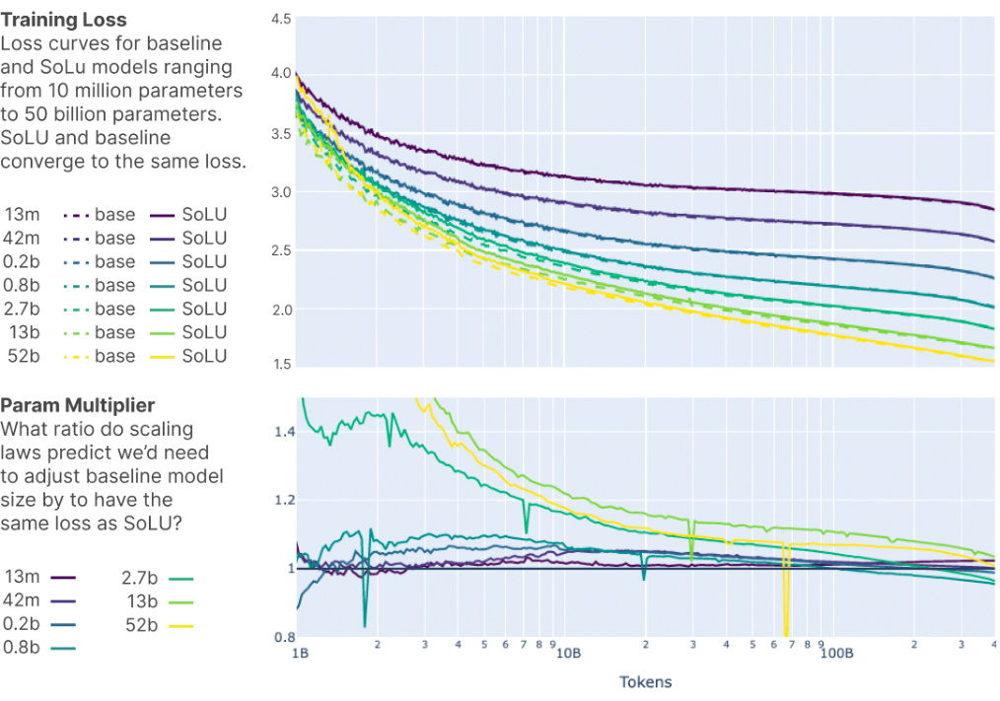
Figure 1: Loss curves for baseline (dotted line) and SoLU (solid line) models ranging from 10 million parameters to 50 billion parameters. Top plot shows learning curves, bottom plot shows a “model size equivalent” version of the same data, with the baseline model set to 1.0× and SoLU models measured in terms of the baseline model size they perform equivalently to, as predicted from the scale laws. For example, if a 1B baseline model achieved loss 2.3, a 2B baseline model achieved loss 2.1, and a 1B SoLU model also achieved loss 2.1, the SoLU model would be said to perform at 2× model size relative to the baseline.
Although downstream tasks often correlate well with the loss on a sufficiently broad training set [1] , it’s possible for the macroscopic loss to hide deficiencies in particular tasks or areas, so we run several representative downstream evaluations to confirm the picture suggested by the loss curves. We evaluate on the Lambada, OpenBookQA, ARC, HellaSwag, MMLU, TriviaQA, and arithmetic datasets, and the results are shown in Figure 2. We see similar overall performance on baseline vs SoLU at all model sizes, with significant differences on a couple tasks (arithmetic seems better with SoLU, whereas TriviaQA seems better with the baseline) but similar performance on most and no systematic trend one way or the other.
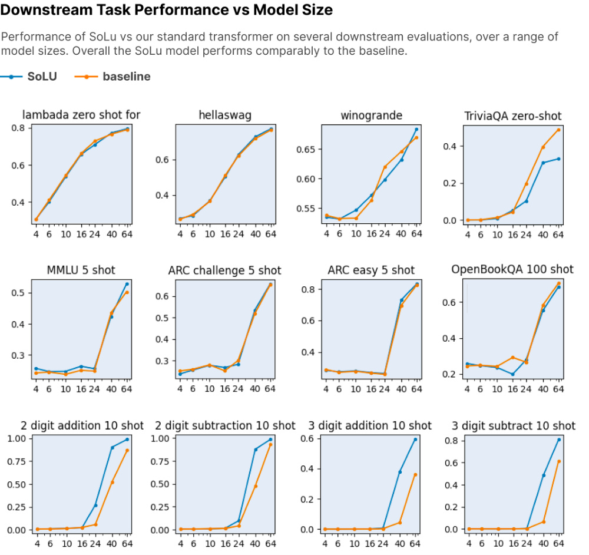
Figure 2: Performance on downstream tasks.
It is worth noting that we do not scan a range of hyperparameters (we scan only model size) for either SoLU or the baseline, and the optimal hyperparameters for SoLU might be different from those for the baseline model. However, the baseline model’s hyperparameters were used in [33] and are similar to those in [1] , while SoLU has not been tuned at all, so even if this effect is present, it likely underestimates the performance of SoLU, suggesting SoLU is at least as good as the baseline.
Finally there is another sense of “performance” worth mentioning – the efficiency of model training. SoLU involves a softmax over the feedforward activations and thus adds a small amount of additional computation, but it is tiny compared to the main matrix multiplies, and with proper GPU kernels, we have found that it slows model training by only an insignificant amount (a less than 1% difference in speed).4
Overall, then, we conclude that SoLU with LayerNorm appears to achieve competitive ML and training performance compared to a standard transformer.
6. Results on Interpretability
Having shown that SoLU is competitive in ML performance, we now demonstrate our main point: that it makes model neurons easier to interpret. Section 6.1 describes the quantitative experiments we perform, Section 6.2 goes through the results of those experiments, Section 6.3 explores some discoveries we are able to make in the SoLU models that we weren’t able to make previously in baseline models, and Section 6.4 discusses how the post-activation LayerNorm may complicate the picture.
6.1 Setup of Experiments
We are interested in whether neurons are "interpretable" – that is, do their activations reliably correspond to a coherent, articulable property of the input? Determining that a neuron is interpretable in this sense is not straightforward. While one can often develop a theory of neuron behavior quite rapidly, verifying that theory (or correcting it if the original theory is mistaken) can take a large amount of human effort. For example, Cammarata et al. [15, 18] dedicated an entire two papers to rigorously investigating a handful of curve detector neurons in a vision model using seven different lines of evidence.
In order to make it practically feasible to study a large number of neurons across several different models, we therefore settle for measuring something less ambitious: whether a given neuron suggests a plausible interpretation given a small amount of human attention. This will lead to both some false positives (neuron appears to have a plausible explanation that on closer inspection would turn out to be wrong) and false negatives (there is a simple correct theory of the neuron’s firings but we don’t succeed in finding it quickly). Nevertheless it is still likely correlated with neurons being interpretable on closer investigation. Additionally, it seems related to the property of being easily interpretable, which would be valuable in its own right: if more neurons are interpretable with low-effort, it makes it more likely that large assemblages of them can be reverse-engineered.
CAVEAT
Since publication, we've become more pessimistic about this metric. Looking at top dataset examples only provides information about whether a neuron is monosemantic when activating strongly. We previously hoped that there might be a significant correlation between whether a neuron is monosemantic when activating strongly, and whether it's monosemantic in general. However, further experiments made us less optimistic about this, at least once one begins trying to optimize for large activations to be monosemantic. Of course, there are ways in which it's interesting to know whether the top activations are monosemantic – it may suggest that the neuron has one feature that it's representing more strongly than others, which may be interesting to investigate – but it's probably not a good guide for architectural experiments if we seek to create monosemantic models. In our more recent Towards Monosemanticity paper we attempt to approach this problem in a more principled way by analyzing the full spectrum of dataset examples.
To measure whether a neuron is “interpretable at first glance," we asked human evaluators (some of the authors) to examine a series of text snippets (typically 20 snippets of length a few paragraphs each) that include tokens where the neuron fires heavily. The firings are highlighted in different shades of red (corresponding to activation magnitude), allowing the evaluator to quickly skim the snippets for a common theme. An example of the dataset examples evaluators see is shown in Figure 3.
Figure 3: Evaluators are shown dataset examples a neuron fires on, highlighted by activation magnitude, as seen above. Neurons are selected randomly from one of a SoLU model or its corresponding baseline, the human evaluator (one of the authors) spends 1–2 minutes evaluating whether a single hypothesis or concept explains 80% of the strongest firings, and marks the neuron INTERPRETABLE if so and NOT INTERPRETABLE otherwise.
The evaluator is instructed to examine the firings for 1–2 minutes per neuron, and then indicate whether they have found a plausible theory to explain the firings. The specific instructions were to mark INTERPRETABLE if “80% or more of the strongest firings can be explained by a single rule or category (e.g. the word “apple," or any phrase relating to music)," and NOT INTERPRETABLE otherwise.
We performed experiments on the 1 layer, 16 layer, 24 layer, 40 layer, and 64 layer (50 billion parameter) models. For each size of model, evaluators were presented with 60 neurons from the baseline model (without SoLU activation) and 60 neurons from the corresponding SoLU model – for a total of 60×2×5=600 neurons across all experiments. To prevent us from being biased in favor of our models, the neurons were presented to evaluators in a randomized and blinded manner (evaluators did not know which neurons came from which model).
Finally, since our SoLU models include both the SoLU itself and an extra layer norm, we did one experiment to disambiguate the effect of the SoLU and the layer norm. Namely, we trained a 16 layer model with the extra layer norm but not the SoLU, and evaluated 60 neurons from this model as well, bringing the grand total to 660 neurons.
6.2 Quantitative Results
The results of our experiment on what fraction of neurons are preliminarily interpretable are shown below in Figure 4. For models from 1 layer to 40 layers, the SoLU model’s neurons are substantially more interpretable than the baseline’s neurons, with increases of roughly 25 absolute percentage points, from ~35% interpretable to ~60% interpretable. This increases the fraction of interpretable neurons by 1.7×. Although the effect is moderate in size, the sample size, consistent gap, and consistent absolute rates of interpretable neurons suggest a real and persistent effect of the SoLU models.
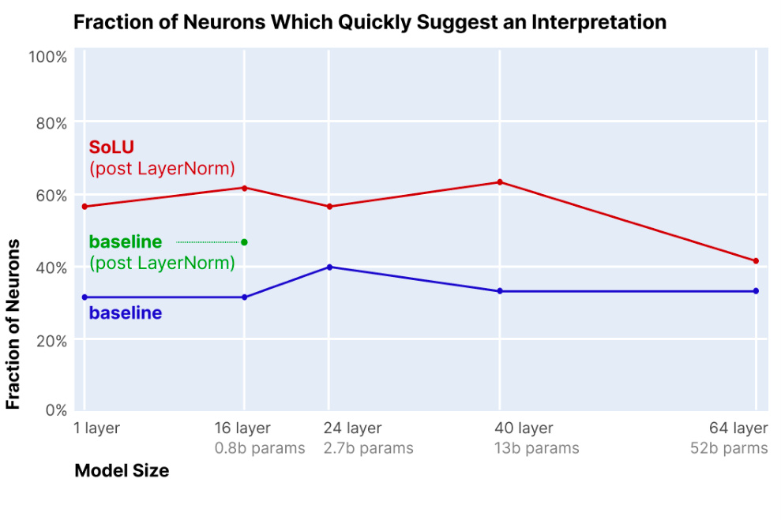
Figure 4: Results of human experiments on interpretability of neurons in SoLU vs baseline transformer for various model sizes. Blue line shows fraction of neurons marked as preliminarily suggesting an interpretation in the baseline transformer for model sizes ranging from 1 to 64 layers. Red line shows fraction of neurons marked as preliminarily suggesting an interpretation in the SoLU transformer. Green dot shows fraction of neurons marked as preliminarily suggesting an interpretation in the 16 layer model with the extra layer-norm but not SoLU. Overall, in models from 1 layer to 40 layers, the SoLU increases the fraction of interpretable neurons by ~25%, while in the 64 layer model, the gain is much smaller.
In the 64 layer model, the benefit of the SoLU model weakens substantially. The fraction of preliminarily interpretable neurons is the same for the baseline model, but is only slightly higher in the SoLU model (42% vs 33%), and is well below the SoLU fraction for small models. We do not know why the 64L model benefits less from SoLU, but one possible theory is that as models become larger, their neurons represent more sophisticated concepts and become harder to understand, such that 1–2 minutes of inspection is less likely to identify their meaning (this would suggest that the neurons remain interpretable, but are no longer “easily interpretable”). Anecdotally, the 64L did appear to us to represent more sophisticated concepts. Another possibility is simply that some effect related to deep models or the dynamics of optimization changes or reduces the usual interpretability effects of the SoLU. In either case, the 64L model is a good illustration of why it is important to test out interpretability ideas on large, frontier models: ideas that work on small models may not work as well on larger ones. This provides good motivation for future work attempting to increase the interpretability of the largest models.
The 16 layer model with the extra layer norm but no SoLU performs about halfway between the SoLU and the baseline, suggesting that the post-activation layer norm alone may provide some but not all of the interpretability benefits.
One annotator found a larger effect than the other two (~20% vs ~60% instead of ~40% vs ~60% for baseline vs SoLU). In conversations after we unblinded the data, our sense was that they held a higher bar for judging a neuron to be interpretable and in particular were less willing to ignore small activations. So, it's possible that the effect size is larger if one has a stricter definition of neurons being interpretable, but we'd hesitate to draw too strong an inference.
As noted in Section 6.1, these results describe whether neurons preliminarily appear interpretable, which isn't necessarily the same as whether we'd consider them to be interpretable on rigorous investigation. On one hand, fast inspection may have failed to detect some neurons that could be shown to be interpretable given more time (and this is a possible hypothesis for the 64L’s underperformance). Conversely, some cases where the evaluators appeared to see a clear hypothesis could easily have been wrong. One particular risk is that we showed top dataset examples and did not show negative examples (examples of the hypothesized pattern on which the neuron might NOT be firing) unless they occur in the same snippet as a positive example. Thus, the neuron might actually be firing on only a subset of cases of the purported pattern, and the evaluators would not have detected this.
Nevertheless, the experiments show there is clearly some real effect, and anecdotally, we have found the SoLU models much easier to explore, work with, and understand. In the next section, we describe some of this openended exploration.
6.3 Qualitative Exploration of SoLU Models
See also discussion of additional qualitative investigation of neurons in this earlier video discussing our preliminary findings with SoLU.
Having quantitatively SoLU's effect on the interpretability of neurons, we now undertake a more open-ended exploration of the interpretable features we find in SoLU models. For this we don’t attempt to be rigorous or systematic, or to compare to non-SoLU models, but informally most of what we describe here we were unable to find prior to training SoLU models. Thus this subsection can roughly be thought of as a few selected examples of what SoLU enables us to find.
6.3.1 ONE-LAYER MODEL NEURONS
We start by exploring a one-layer SoLU model. One-layer transformers have some special properties which often make mechanistic interpretability easier. For this investigation, the most important observation is that, modulo concerns about LayerNorm, the activation of each MLP neuron has a linear effect on the logits. By multiplying the vector of output weights for the neuron by the unembedding matrix, we can directly read off which output tokens have their logits increased when this neuron fires, and by how much. Further, this is the only effect of such neurons in one-layer models.
This has several benefits. Firstly, it puts our interpretability efforts on much firmer ground, as we can both heuristically infer the purpose of a neuron from dataset examples, and then validate this understanding by cross-checking it with the effect on the output logits. But even more than that, it means that if neurons are interpretable, they correspond to interpretable end-to-end rules of model behavior. We consider this particularly useful in combination with our previous paper on reverse-engineering small attention-only models [7] as, rather than only being able to fully reverse engineer a small attention-only model, we can now reverse engineer a 1 layer full transformer.
As an example, we have identified a neuron that appears to fire precisely on text encoded in base 64 (as often occurs in web URL’s or other contexts). Using the fact that our model has only 1 layer, we can identify which tokens this neuron increases the probability of, and unsurprisingly it increases tokens corresponding to random mixed-case strings, while decreasing the likelihood of common English words. Other examples include neurons corresponding to all-caps text (the same neuron shown in Figure 3) or to a number followed by a comma (as occurs when writing numbers with four or more digits)
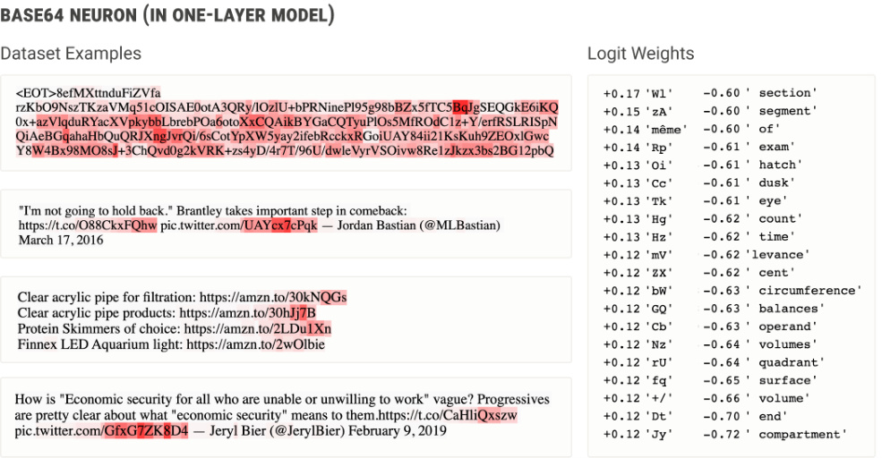
Figure 5: A neuron in a 1-layer SoLU model that appears to fire on base64-encoded text (left). This is confirmed by the fact that the neuron's expanded weights to the logits (right) increases the probabilities of a bunch of tokens in mixed case that rarely occur in words, while decreasing the probability of a number of tokens representing English words. It can be understood as an interpretable rule that on base64 text, the next token is more likely to be base64 as well.
6.3.2 EARLY LAYER NEURONS IN LARGER MODELS ("DE-TOKENIZATION")
Next we move our exploration to larger models – our remaining examples will come from a mix of the 16L, 24L, 40L, and 64L models. One of our most interesting findings is that neurons in the early, middle, and late layers of a large network tend to play very different types of roles, just as features at different depths of conv net vision models are known to be different. We'll discuss neurons from each in their own section, starting with those in early layers.
Early layer neurons seem to often be involved in mapping the “artificial” structure of tokens to a more natural, semantically meaningful representation.
Many early neurons seem to respond to multi-token words or compound words. For example a neuron which fires on the final token (“ing”) of “Trend|ing” (essentially mapping the sequences of token “Trend” followed by token “ing” to the meaningful word “Trending”). Some other examples include:
-
Neurons responding to specific words which are split into multiple tokens: “Bank|ing”, “word|ing”, “Ch|olesterol”, “Libert|arian”, “Civil|ian”, “Sh|anghai”, “Not|withstanding”...
-
Neurons responding to the names of famous people: “Martin| Luther| King”, “Donald| Trump”,
-
“Lyndon| Johnson”, “George| Orwell”, “Ernest| Hemingway”, “Muhammad| Ali”, “Oprah| Winfrey”...
-
(cf. [17] )
-
Neurons responding to other nouns: “Human| Rights| Watch”, “International| Monetary| Fund”, “Hurricane| Matthew”, “Real| Madrid”...
Neurons responding to compound words: “book| club”, “social| security”, “computer| vision”, “organized| crime”, “birthday| party”, “heart| attack”...
Neurons responding to LaTeX “\” commands: “|left”, “|frac|{”, “|begin”...
We also see many early neurons which respond to a token in a specific language or context. For example, we
found three early layer neurons that appear to represent the word “die” when used in each of three non-English languages: German, Dutch, and Afrikaans (note some related results were found by Coenen et al. [34] ).
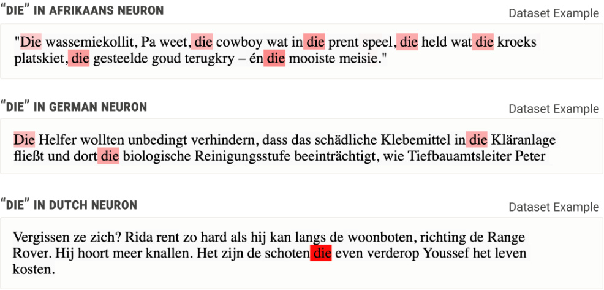
Figure 6: Three neurons that fire in response to the word “die” when used in each of three specific languages (and each of which don’t fire on any of the languages or in response to “die” in an English context).
Distinguishing between the same token in different contexts isn't restricted to natural language. For example, there are neurons that represent the “<” character in the distinct contexts of python, IRC, and XML/HTML.
SoLU seems to have made an especially big difference for these early layer neurons: despite significant effort, we made almost no progress in understanding early layer MLP neurons in normal models, but easily understood many once we began looking at SoLU models.
6.3.3 LATE LAYER NEURONS IN LARGER MODELS ("RE-TOKENIZATION")
Late layer neurons (those near the output of the network) often do the opposite of what early layer neurons do: they mediate the conversion of words or contextualized tokens back into literal tokens. For example, one neuron in the last layer fires on the token “st” while increasing the likelihood that the subsequent token is “rag”; essentially this is a way of converting or dictating a representation of the word “st|rag|glers” into its constituent tokens one by one for output. Similarly, a “nappies” output neuron fires on the token “n” and increases the
probability of the token “app” to help write “n|app|ies”. These neurons essentially simulate an additional output vocabulary item which is only available when certain conditions are met in the previous tokens.
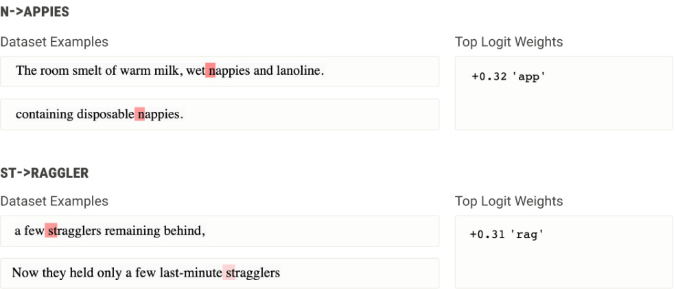
Figure 7: Neurons that fire on a given token while increasing the likelihood of a specific next token. When they occur in a layer late in the network, these neurons can be interpreted as decoding a word (which the model internally represents) into its constituent tokens (which the model must output).
6.3.4 MIDDLE LAYER NEURONS IN LARGER MODELS
Neurons in the middle layers often represent more complex, abstract ideas. For instance, there is a neuron that appears to represent numbers when and only when they refer to a number of people:
Figure 8: Neuron that appears to fire on numbers (including both numerals and number words) when and only when the number enumerates people (as opposed to counting something other than people).
A huge variety of interesting neurons can be found in these layers. Some common categories we observed include:
-
Neurons which fire on particular types of descriptive clauses: a neuron which fires on a clause describing a sound, a neuron for clauses describing clothing, a neuron for musical descriptive clauses (e.g. "in the key of C major"), a neuron for clauses describing text written on an object, …
-
Neurons which respond to discourse markers: a neuron which responds to markers emphasizing the importance of something (e.g. "the amazing thing is"), a neuron which responds to hedging (e.g. "it seems to me that…"), …
-
Neurons which disambiguate a special interpretation of a token: a neuron which responds to A/B/C/D when used as grades, a neuron which responds to the “day” portion of a date, a neuron which responds to numbers when they're a quantity in a recipe, a neuron which responds to C-style format specifiers (e.g. "%s" or "%d") in strings, …
But there are lots of neurons that are hard to put into these categories, such as a neuron which seems to help parse ASCII table columns.
In summary, the general pattern of observations across layers suggests a rough layout where early layers "detokenize," mapping tokens to fairly concrete concepts (phrases like “machine learning” or words when used in a specific language), the middle of the network deals in more abstract concepts such as “any clause that describes music," and the later portions of the network "re-tokenize," converting concrete concepts back into literal tokens to be output. All of this is very preliminary and requires much more detailed study to draw solid conclusions. However, our experience in vision was that having a sense of what kinds of features tend to exist at different layers was very helpful as high-level orientation for understanding models (see especially [35] ). It seems promising that we may be developing something similar here.
6.3.5 ABSTRACT PATTERNS
In the course of exploring neurons in these SoLU models, we noticed a few more abstract patterns, which seem worth noting despite us not having investigated them in detail:
Neuron Splitting: As we make models larger, we've observed several cases where a neuron in a small model appears to "split" into multiple neurons in a larger model. For example, a hexadecimal neuron splitting into neurons for specific hexadecimal characters (e.g. a "3" in hexadecimal neuron), or a tokens that occur in English but are actually German in this context neuron splitting into specific token X in German neurons (e.g. "die" in German).
Neuron Families: Understanding circuits in vision models can be simplified by as much as 50× by understanding that many neurons are parameterized by certain kinds of symmetries (e.g. many neurons implement rotated versions of the same feature) [36] . More generally, in the original circuits thread, it proved very useful to understand neurons as existing in families of similar neurons [35] . We've noticed that a significant number of early MLP neurons in language models implement features of the form "token X in language Y," which might be thought of as forming a family of neurons parameterized by X and Y. Possibly this is an entry point for discovering an abstract kind of equivariance in language models, such as equivariance to language.
Duality Between Early and Late Layers: There often seems to be a duality between the types of features we see in early layers and those in late layers. In particular, we see early features for recognizing multi-token words or compound words, and late features for outputting certain multi-token words or compound words back as tokens.
Similarities to CLIP Neurons: We noticed many of the types of neurons described by Goh et al. [17] in their investigation of CLIP. In particular, we observed neurons corresponding to famous people and geographic regions. This might be seen as a kind of cross-modality universality [10, 37] . One intuition is that since CLIP was a multimodal model and the vision side was trying to align images with text, it was incentivized to represent features that naturally occur in language models.
6.3.6 PARTIAL MITIGATION OF INTERPRETABILITY ILLUSIONS
One of the hazards of investigating neurons is that it can be easy to develop incorrect theories of neurons. A recent paper by Bolukbasi et al. [38] emphasizes the risk of "interpretability illusions" in the context of Transformers. More generally, the original Circuits thread (especially Cammarata et al. [15] ) emphasized the importance of using multiple lines of evidence before having confidence in a theory of a neuron.
The results in this section are aimed at being exploratory. While they're generally a bit deeper than the quick judgment calls used in our quantitative evaluation, the investigations of any given neuron tend to be quite superficial compared to Cammarata et al. [15] . For that reason, we wouldn't stand behind our theories of most neurons with a high level of confidence. However, there are several factors which mitigate certain classes of misunderstandings:
-
Our dataset examples are collected the same, highly diverse data distribution our models are trained on (partially mitigating the concerns of [38] ).
-
We made it easy to open any dataset example in an interactive editor where one could observe how activations change if one edits it. While we didn't do this for every neuron, we often did when we felt uncertain or confused.
-
For some neurons, we looked at dataset examples across a range of activations.
-
For some neurons, we did bespoke experiments, such as comparing a hexadecimal text neuron to a regular expression.
6.4 Implications of LayerNorm
Earlier, we decided to use models with a LayerNorm after the SoLU activation function in order to recover the significant performance drop we observed when using SoLU alone. Unfortunately, as we observed in Section 4.3, LayerNorm significantly complicates the story for polysemanticity and superposition.
One hypothesis is that SoLU creates something like two tiers of features: neuron-aligned and non-neuronaligned features. The neuron-aligned features are what we observe when we examine SoLU neurons, and if any are present they dominate the activations. The non-neuron-aligned features only have a large effect when no basis-aligned features are present, and LayerNorm rescales the activations which SoLU suppressed.
To investigate this, we collected dataset examples across a range of neuron activation levels, rather than solely looking at the dataset examples which maximally activate a neuron. We then compared dataset examples at different levels before and after LayerNorm. Our strong impression from looking at a variety of neurons was that for neurons which seemed interpretable, the post-LayerNorm dataset examples had many more examples which were not consistent with the feature the neuron seemed to respond to. This was especially true for dataset examples which only slightly activated the neuron, rather than strongly activating it.
To get at this in a slightly more objective way, one of the authors considered a seemingly interpretable neuron which responds to the words "left" and "right", especially when used as adjectives to specify body parts. He categorized around a thousand pre- and post-LayerNorm dataset examples based on whether they were consistent or inconsistent with the hypothesis. The categorization seemed to show that post-LayerNorm activations were much more likely to have unrelated activations in the low-activation regime. Note that this experiment was done informally and not blinded, so results might be biased, although the effect seemed so striking that we believe it to be real:
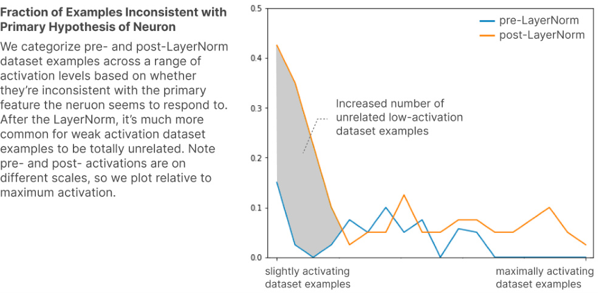
This is exactly the signature we'd expect to see if LayerNorm was being used to "smuggle" non-basis aligned features through SoLU, as speculated in Section 4.3.
From this perspective, SoLU is a double-edged sword for interpretability. On the one hand, it makes it much easier to study a subset of MLP layer features which end up nicely aligned with neurons. On the other hand, we suspect that there are many other non-neuron-aligned features which are essential to the loss and arguably harder to study than in a regular model. Perhaps more concerningly, if one only looked at the SoLU activation, it would be easy for these features to be invisible and create a false sense that one understands all the features.
Despite this, we are inclined to see SoLU as an improvement on the prior situation: we understand many more features than we did before, including in layers like the first MLP layer where we previously had little traction.
7. Related Work
7.1 UNDERSTANDING TRANSFORMER MLPS
Although a significant body of research has explored Transformers generally (Bertology, see review [39] ), it has tended to not focus on MLP layers. However, it's been increasingly clear that MLP layers are at the heart of many questions of interest. A recent paper by Meng et al. [40] made remarkable use of ablations to localize factual knowledge to MLP layers, and then edit it with gradient descent.
A small body of work has investigated individual neurons in Transformers. One line of work by Geva et al. [41, 42, 43] has explored MLP neurons as key-value pairs which adjust model predictions. Another paper by Dai et al. [44] explores the possibility of "knowledge neurons" which encode specific facts. Alammar [45] visualizes individual neurons, and uses NMF to find additional structure. Finally, a recent paper by Bolukbasi et al. [38] cautions against the risk of "interpretability illusions" which create a misleading impression that Transformer MLP neurons are interpretable if one focuses on top dataset examples and evaluates on narrow dataset distributions.
In parallel with this work interpreting neurons, our sense from talking with other researchers has been that some others have found individual MLP neurons challenging to interpret. This has also been our experience prior to SoLU (see this informal video). We mention this because negative results are often not formally represented in the literature. It's unclear to what extent these differences in getting traction on neuron interpretability reflect a difference in the underlying models studied, methodological differences, or differences in the relevant definition of interpretability.
7.2 ANALYZING INDIVIDUAL NEURONS AND FEATURES
A significant amount of work has been done investigating interpretable neurons and features in contexts other than Transformers including word embeddings (see [13] ), RNNs (e.g. [46, 47] ) and convolutional neural networks (see generally e.g. [48, 49, 35, 17] ; individual neuron families [15, 16] ).
7.3 POLYSEMANTICITY AND SUPERPOSITION
Polysemantic neurons were originally introduced as a term when observed in investigations of neurons with feature visualization [9] , although they were widely known beforehand and just generally considered uninteresting. Polysemanticity can be seen as a special case of the idea of "multi-faceted neurons" [50] , where multi-faceted neurons encompass any neuron which responds to multiple distinct cases (such a grocery store neuron which responds to both the outside sign of a grocery store and the inside rows of groceries) while polysemantic neurons have cases which seem unrelated.
The original Circuits thread elaborated on the idea of polysemantic neurons as a challenge for mechanistic interpretability and introduced superposition as a hypothesis for polysemanticity [10] . Closely related ideas were originally introduced by Arora et al. [22] who suggested that when words have multiple meanings, their word embeddings might be stored in "superposition". This line of thinking was elaborated on by Goh [21] .
More generally, a number of other areas of research have had ideas related to superposition, including theories of neural coding, classical connectionist theories of AI, disentanglement, sparse coding, dictionary learning, and vector symbolic architectures. Additionally, superposition is only possible at all because of the properties of sparse vectors projected into lower dimensional spaces, a property studied in the field of compressed sensing.
FOLLOW-UP
Our follow up paper, Toy Models of Superposition, provides a much more detailed related work section exploring how superposition relates to work in a variety of other research areas.
7.4 TRANSFORMER ARCHITECTURAL VARIANTS
Innovation in transformer architectures has of course been enormous since the introduction of the original transformer several years ago [51] , and many variants now exist on the attention mechanism (e.g. [52, 53, 54] ), loss function, embedding layers, and much more. Of particular note, a number of changes to the activation function have stabilized training or improved ML performance (e.g. [55, 56] ). SoLU is an instance of this genre of architectural change, but differs in that the goal is to improve interpretability while preserving ML performance, rather than simply to improve ML performance.
7.5 SPARSITY
The earliest work one might think of as linking sparsity and interpretability likely happened outside machine learning. In particular, there are notable connections between sparsity and interpretability in two lines of work preceding deep learning: non-negative matrix factorization and sparse coding.
Non-Negative Matrix Factorization: In the physical sciences, non-negative matrix factorization (NMF) [57, 58] – a method tracing back to 1970s chemistry [59] – is a popular method of dimensionality reduction. It often produces sparse results due to the positivity constraint, much as ReLU networks produce sparse neurons. Interpretability seems to be a major cause of NMF's popularity. In particular, it often produces factors with meaningful physical interpretations in the context of physical sciences. (Much more recently, NMF has also been found to be strikingly effective at extracting interpretable structure from neural net activations including vision models [60] , video game models [61] , robotics [62] , and transformer language models [63] .)
Sparse Coding: Similarly, in neuroscience, a series of papers (especially [23] ) popularized sparse coding as a theoretical model of V1. While the neuroscience literature generally motivates sparsity based on biological plausibility or the natural statistics of images, it seems like a large part of its popularity must come from the fact that sparse coding produces strikingly interpretable features, such as Gabor filters.
Sparsity in Deep Learning: Given the historical links between theoretical neuroscience and deep learning, it's unsurprising that there's significant interest in neural networks with sparse activations or weights. In much of this work interpretability isn't an explicit motivation or is only a tertiary consideration, with emphasis on biological plausibility, computational efficiency, or hypothesized modeling benefits. However, with growing interest in interpretability, an increasing amount of work on sparsity has emphasized interpretability as a goal. Perhaps most striking is work on word embeddings (e.g. [64, 65, 66] ), where sparsity has been used to create a privileged basis where there otherwise wouldn't be.
7.6 DESIGNING MODELS FOR INTERPRETABILITY
A number of lines of work aim to create machine learning models which are, in some sense, designed to be interpretable. For example, Gupta and collaborators' lattice networks ("GlassBox") [67, 68] are designed to guarantee that the model is monotonic with respect to certain variables, helping users to reason about it. Another example is work on rule-based systems which can be easily read and understood by humans for high stakes contexts like healthcare [69, 70] . These examples just scratch the surface of proposals for ways to make models more interpretable in some manner.
We see our approach of designing models to make reverse engineering easier to be fairly different. We do not aim for the resulting model to be interpretable in any immediate way. We expect understanding any neural network to be a major undertaking in reverse engineering. Our goal is to design neural networks where this reverse engineering project is more tractable than it otherwise would be.
8. Discussion
Our results appear to significantly increase the number of easily interpretable MLP neurons. This is especially true in the first transformer MLP layer, where it was previously very difficult to understand any neurons.
Just as having a general understanding of what features exist at different layers of a convolutional network was important for the original circuits thread, we expect that just having the kind of basic understanding hinted at in Section 6.3 will be valuable in our efforts to understand Transformer MLP layers. More generally, understanding MLP layers is the key bottleneck preventing us from extending the detailed mathematical understanding we developed of attention-only transformers [7] to understanding general transformers. As a very concrete example, we might be able to understand how induction heads [8] , which appear to play an important role in incontext learning, participate in larger circuits within general, larger language models. It could also advance the study of how to “edit” knowledge inside neural networks [40] . Ultimately, we hope that success could unblock a path towards holistic understanding of the mechanisms driving large language models.
An important limitation of our results is that, in order to get competitive performance, we needed to make an architectural change to our models (post activation LayerNorm) which allowed the model to slip non-neuron aligned features through as small activations that are rescaled to be larger. On the one hand, this means that, along with our more interpretable neurons, there appear to be a number of "invisible" non-neuron-aligned features hiding in small activations. This is a significant concern, although it seems likely that isolating a larger number of cleanly interpretable features is still a victory. But on the other hand, this limitation may actually shed important light on more fundamental issues. The fact that performance was restored when the model could once more implement superposition seems like the first real (albeit circumstantial) evidence for favoring the superposition hypothesis over alternatives.
It is worth noting that our results have several other limitations. First, our experiments involve only a specific base architecture of transformer trained on a specific dataset, and the results may or may not generalize to transformer language models in general. Both our architecture and our dataset is broadly similar to that of other large language model families such as GPT [1] or Gopher [5] , and we do not make any exotic choices related to data or architecture, but nevertheless there are some differences: for example compared to GPT-3, we train on a longer context (8192 tokens), we use rotary attention, we mix dense and sparse attention in each layer, we use a larger proportion of books data compared to common crawl, as well as several other minor differences. We cannot exclude that different architectural choices might have led to our models being interpretable even without SoLU, or conversely, some of our architectural choices might be necessary in addition to SoLU in order for the benefits of the latter to manifest. Experimenting with these architectural details and pinning down the true minimal requirements for a model to be interpretable are fruitful directions for future work.
Second, the interpretability benefits of SoLU seem to decrease significantly as models become larger, specifically there is a sharp transition around 50 billion parameters (64 layers). It is therefore uncertain whether SoLU will continue to provide interpretability gains as models scale additional orders of magnitude beyond their current state-of-the-art size. That said, SoLU continues to provide nonzero interpretability gains as far up as 50 billion parameter size, as we saw in Section 6.2, and appears to provide a very strong gain at 12 billion parameters.
Third, as noted in Section 6, our experimental methodology is limited by the need for quick measurements, so we do not measure whether neurons are truly interpretable, but only whether they appear to be interpretable on quick inspection. This leaves out negative data examples as well as neurons where the evaluator might have found a pattern given more time but did not find one. More generally, quick inspection can simply lead to incorrect judgments. So the experimental results should be viewed with caution, although in all likelihood, there is at least some correlation between the results and what a longer more detailed inspection would show.
Fourth, even if we did reach a point where all MLP neurons were reliably and easily interpretable, with no concerns about superposition and polysemanticity, we would still be far from the point where interpretability can be directly useful for fully understanding state of the art models. State of the art models such as GPT-3 have millions of neurons, and even if large teams of contractors were paid to interpret them all, this alone would not make the “global picture” interpretable by humans – the data would need some kind of additional structure or summarization, if we wanted to make global statements about the model. We consider the problem of scaling or integration to be one of the major remaining open problems of transformer interpretability.
All that said, the robustness or generalizability of the specific SoLU results seems less significant than the broader observation that it is possible for an architectural change to greatly improve interpretability without affecting ML performance. It is quite striking that it is possible for two neural networks to perform equivalent computations and produce similar outputs, yet one has an internal state that is much more legible to humans than the other. This suggests a possible general direction of designing for mechanistic interpretability: it may be possible to design architectures (for both present and future models) which are competitive with the state-ofthe-art while being much easier to reverse engineer.
To the extent that interpretability is an important driver of safety in both the short and the long run, finding architectures that promote mechanistic interpretability seems like an urgent task, particularly as frontier models continue to scale and may increasingly require months or even years to train. Knowing the right architectural choices in advance could make a big difference in our ability to understand and control these models.
Acknowledgments
In writing this paper, our thinking and exposition was greatly clarified by conversation with Tom McGrath, Martin Wattenberg, Jeff Wu, Nicholas Schiefer, Vladimir Mikulik, and Jacob Hilton.
We're also deeply grateful to Daniela Amodei, Jamie Kerr, Timothy Telleen-Lawton, Jia Yuan Loke, Jeffrey Ladish, Rebecca Raible, Rune Kvist, Rob Gilson, Guro Khundadze, Filipe Dobreira, Ethan Perez, Sam Bowman, Sam Ringer, Sebastian Conybeare, Nick Cammarata, Buck Shlegeris, James Bradbury, Kevin Wang, Jan Leike, Paul Christiano, and Evan Hubinger for their support, for comments on this work, and for conversations that contributed to the background thinking on interpretability and safety this work is based on.
Author contributions
Model Training: The SoLU models were implemented and trained by Nelson Elhage. This was made possible by infrastructure for training and working with large models, and having baseline models to work from. Led by Tom Brown, Sam McCandlish, Nicholas Joseph, and Jared Kaplan, the majority of Anthropic's technical staff contributed to the development of our efficient distributed training infrastructure and the underlying machine learning. Core contributors include Tom Henighan, Scott Johnston, Sheer El Showk, Nicholas Joseph, and Ben Mann.
Neuron Analysis: Nelson Elhage, Tristan Hume, and Dario Amodei performed the systematic quantitative analysis of neuron interpretability. Chris Olah performed extensive qualitative exploration of the features found in SoLU models of different scales. Nelson Elhage, Catherine Olsson, Neel Nanda, and Tristan Hume also did qualitative explorations of neurons. Nelson Elhage and Tristan Hume explored other ways of rigorously characterizing neurons, such as comparing them to regex expressions. Nelson Elhage built the tooling for exploring neurons, with contributions from Tristan Hume, Catherine Olsson, and Chris Olah.
Writing: This paper was drafted by Dario Amodei and Chris Olah, with significant contributions from Nelson Elhage, Tristan Hume, Catherine Olsson, and Neel Nanda. Other members of Anthropic made miscellaneous contributions throughout the writing process.
Cluster: Nova DasSarma and Eli Tran-Johnson managed the research cluster our research depended on and maintained its stability, making this research possible.
Other contributions: The ideas explored in this paper developed in conversations between Chris Olah, Nelson Elhage, Catherine Olsson, Neel Nanda, and Tristan Hume. Chris Olah and Dario Amodei managed this project. Jared Kaplan, Jack Clark, Tom Brown, and Sam McCandlish provided invaluable advice throughout the research process.
Citation Information
Please cite as:
Elhage, et al., "Softmax Linear Units", Transformer Circuits Thread, 2022.
BibTeX Citation:
@article{elhage2022solu,
title={Softmax Linear Units},
author={Elhage, Nelson and Hume, Tristan and Olsson, Catherine and Nanda, Neel and Henighan, Tom and Johnston,
Scott and ElShowk, Sheer and Joseph, Nicholas and DasSarma, Nova and Mann, Ben and Hernandez, Danny and Askell,
Amanda and Ndousse, Kamal and Jones, Andy and Drain, Dawn and Chen, Anna and Bai, Yuntao and Ganguli, Deep and
Lovitt, Liane and Hatfield-Dodds, Zac and Kernion, Jackson and Conerly, Tom and Kravec, Shauna and Fort, Stanislav
and Kadavath, Saurav and Jacobson, Josh and Tran-Johnson, Eli and Kaplan, Jared and Clark, Jack and Brown, Tom and
McCandlish, Sam and Amodei, Dario and Olah, Christopher},
year={2022},
journal={Transformer Circuits Thread},
note={https://transformer-circuits.pub/2022/solu/index.html}
}
Footnotes
If a representation, like a word embedding, is surrounded by purely linear operations such as matrix multiplies or addition, then we can “change basis” by applying any invertible matrix M with the matrix multiply before the layer and M−1 with the matrix multiply after, which leaves the final output invariant but changes the specific activations. [ ↩ ]
Note however that the activations we try to interpret are those before the extra layer norm, not after. [ ↩ ]
Note that making architectures which improve interpretability at arbitrary cost to performance is both trivial and uninteresting. As a reductio ad absurdum, we could replace any neural network with a linear regression, which is highly interpretable but likely achieves very poor performance. Of course, architecture changes which result in minor performance decreases but major interpretability improvements may still be worth pursuing. [ ↩ ]
In principle, one could sidestep this small cost by training an isomorphic model with exponential activation functions and then switching to SoLU after training, ignoring concerns about different numerics. [ ↩ ]
References
Language models are few-shot learners [PDF]
Brown, T.B., Mann, B., Ryder, N., Subbiah, M., Kaplan, J., Dhariwal, P., Neelakantan, A., Shyam, P., Sastry, G., Askell, A. and others, 2020. arXiv preprint arXiv:2005.14165.
LaMDA: our breakthrough conversation technology [link]
Collins, E. and Ghahramani, Z., 2021.
Evaluating large language models trained on code
Chen, M., Tworek, J., Jun, H., Yuan, Q., Pinto, H.P.d.O., Kaplan, J., Edwards, H., Burda, Y., Joseph, N., Brockman, G. and others, 2021. arXiv preprint arXiv:2107.03374.
Towards a human-like open-domain chatbot
Adiwardana, D., Luong, M., So, D.R., Hall, J., Fiedel, N., Thoppilan, R., Yang, Z., Kulshreshtha, A., Nemade, G., Lu, Y. and others, 2020. arXiv preprint arXiv:2001.09977.
Scaling Language Models: Methods, Analysis & Insights from Training Gopher [PDF]
Rae, J.W., Borgeaud, S., Cai, T., Millican, K., Hoffmann, J., Song, F., Aslanides, J., Henderson, S., Ring, R., Young, S., Rutherford, E., Hennigan, T., Menick, J., Cassirer, A., Powell, R., Driessche, G.v.d., Hendricks, L.A., Rauh, M., Huang, P., Glaese, A., Welbl, J., Dathathri, S., Huang, S., Uesato, J., Mellor, J., Higgins, I., Creswell, A., McAleese, N., Wu, A., Elsen, E., Jayakumar, S., Buchatskaya, E., Budden, D., Sutherland, E., Simonyan, K., Paganini, M., Sifre, L., Martens, L., Li, X.L., Kuncoro, A., Nematzadeh, A., Gribovskaya, E., Donato, D., Lazaridou, A., Mensch, A., Lespiau, J., Tsimpoukelli, M., Grigorev, N., Fritz, D., Sottiaux, T., Pajarskas, M., Pohlen, T., Gong, Z., Toyama, D., d’Autume, C.d.M., Li, Y., Terzi, T., Mikulik, V., Babuschkin, I., Clark, A., Casas, D.d.L., Guy, A., Jones, C., Bradbury, J., Johnson, M., Hechtman, B., Weidinger, L., Gabriel, I., Isaac,
W., Lockhart, E., Osindero, S., Rimell, L., Dyer, C., Vinyals, O., Ayoub, K., Stanway, J., Bennett, L., Hassabis, D., Kavukcuoglu, K. and Irving, G., 2021. Preprint.
Thread: Circuits [link]
Cammarata, N., Carter, S., Goh, G., Olah, C., Petrov, M., Schubert, L., Voss, C., Egan, B. and Lim, S.K., 2020. Distill.
A Mathematical Framework for Transformer Circuits [HTML]
Elhage, N., Nanda, N., Olsson, C., Henighan, T., Joseph, N., Mann, B., Askell, A., Bai, Y., Chen, A., Conerly, T., DasSarma, N., Drain, D., Ganguli, D., Hatfield-Dodds, Z., Hernandez, D., Jones, A., Kernion, J., Lovitt, L., Ndousse, K., Amodei, D., Brown, T., Clark, J., Kaplan, J., McCandlish, S. and Olah, C., 2021. Transformer Circuits Thread.
In-context Learning and Induction Heads [HTML]
Olsson, C., Elhage, N., Nanda, N., Joseph, N., DasSarma, N., Henighan, T., Mann, B., Askell, A., Bai, Y., Chen, A., Conerly, T., Drain, D., Ganguli, D., Hatfield-Dodds, Z., Hernandez, D., Johnston, S., Jones, A., Kernion, J., Lovitt, L., Ndousse, K., Amodei, D., Brown, T., Clark, J., Kaplan, J., McCandlish, S. and Olah, C., 2022. Transformer Circuits Thread.
Feature Visualization [link]
Olah, C., Mordvintsev, A. and Schubert, L., 2017. Distill. DOI: 10.23915/distill.00007
Zoom In: An Introduction to Circuits
Olah, C., Cammarata, N., Schubert, L., Goh, G., Petrov, M. and Carter, S., 2020. Distill. DOI: 10.23915/distill.00024.001
Visualizing Weights [link]
Voss, C., Cammarata, N., Goh, G., Petrov, M., Schubert, L., Egan, B., Lim, S.K. and Olah, C., 2021. Distill. DOI: 10.23915/distill.00024.007
Neural Networks, Manifolds, and Topology [link]
Olah, C., 2014.
Linguistic regularities in continuous space word representations [PDF]
Mikolov, T., Yih, W. and Zweig, G., 2013. Proceedings of the 2013 conference of the north american chapter of the association for computational linguistics: Human language technologies, pp. 746–751.
TCAV: Relative concept importance testing with Linear Concept Activation Vectors [PDF]
Kim, B., Gilmer, J., Viegas, F., Erlingsson, U. and Wattenberg, M., 2017. arXiv preprint arXiv:1711.11279.
Curve Detectors [link]
Cammarata, N., Goh, G., Carter, S., Schubert, L., Petrov, M. and Olah, C., 2020. Distill.
High-Low Frequency Detectors
Schubert, L., Voss, C., Cammarata, N., Goh, G. and Olah, C., 2021. Distill. DOI: 10.23915/distill.00024.005
Multimodal Neurons in Artificial Neural Networks
Goh, G., Cammarata, N., Voss, C., Carter, S., Petrov, M., Schubert, L., Radford, A. and Olah, C., 2021. Distill. DOI: 10.23915/distill.00030
Curve Circuits [link]
Cammarata, N., Goh, G., Carter, S., Voss, C., Schubert, L. and Olah, C., 2021. Distill.
Adversarial examples are not bugs, they are features
Ilyas, A., Santurkar, S., Tsipras, D., Engstrom, L., Tran, B. and Madry, A., 2019. Advances in neural information processing systems, Vol 32.
A Discussion of 'Adversarial Examples Are Not Bugs, They Are Features' [link]
Engstrom, L., Gilmer, J., Goh, G., Hendrycks, D., Ilyas, A., Madry, A., Nakano, R., Nakkiran, P., Santurkar, S., Tran, B., Tsipras, D. and Wallace, E., 2019. Distill.
Decoding The Thought Vector [link]
Goh, G., 2016.
Linear algebraic structure of word senses, with applications to polysemy
Arora, S., Li, Y., Liang, Y., Ma, T. and Risteski, A., 2018. Transactions of the Association for Computational Linguistics, Vol 6, pp. 483–495. MIT Press.
Sparse coding with an overcomplete basis set: A strategy employed by V1?
Olshausen, B.A. and Field, D.J., 1997. Vision research, Vol 37(23), pp. 3311–3325. Elsevier.
Extensions of Lipschitz mappings into a Hilbert space 26
Johnson, W.B. and Lindenstrauss, J., 1984. Contemporary mathematics, Vol 26, pp. 28.
NormFormer: Improved Transformer Pretraining with Extra Normalization
Shleifer, S., Weston, J. and Ott, M., 2021. arXiv preprint arXiv:2110.09456.
The LAMBADA dataset: Word prediction requiring a broad discourse context
Paperno, D., Kruszewski, G., Lazaridou, A., Pham, Q.N., Bernardi, R., Pezzelle, S., Baroni, M., Boleda, G. and Fernandez, R., 2016. arXiv preprint arXiv:1606.06031.
Think you have solved question answering? try arc, the ai2 reasoning challenge
Clark, P., Cowhey, I., Etzioni, O., Khot, T., Sabharwal, A., Schoenick, C. and Tafjord, O., 2018. arXiv preprint arXiv:1803.05457.
Can a suit of armor conduct electricity? a new dataset for open book question answering
Mihaylov, T., Clark, P., Khot, T. and Sabharwal, A., 2018. arXiv preprint arXiv:1809.02789.
Triviaqa: A large scale distantly supervised challenge dataset for reading comprehension
Joshi, M., Choi, E., Weld, D.S. and Zettlemoyer, L., 2017. arXiv preprint arXiv:1705.03551.
Measuring massive multitask language understanding
Hendrycks, D., Burns, C., Basart, S., Zou, A., Mazeika, M., Song, D. and Steinhardt, J., 2020. arXiv preprint arXiv:2009.03300.
HellaSwag: Can a machine really finish your sentence?
Zellers, R., Holtzman, A., Bisk, Y., Farhadi, A. and Choi, Y., 2019. arXiv preprint arXiv:1905.07830.
A General Language Assistant as a Laboratory for Alignment
Askell, A., Bai, Y., Chen, A., Drain, D., Ganguli, D., Henighan, T., Jones, A., Joseph, N., Mann, B., DasSarma, N. and others, 2021. arXiv preprint arXiv:2112.00861.
Training a Helpful and Harmless Assistant with Reinforcement Learning from Human Feedback
Bai, Y., Jones, A., Ndousse, K., Askell, A., Chen, A., DasSarma, N., Drain, D., Fort, S., Ganguli, D., Henighan, T. and others, 2022. arXiv preprint arXiv:2204.05862.
Visualizing and measuring the geometry of BERT
Coenen, A., Reif, E., Yuan, A., Kim, B., Pearce, A., Viégas, F. and Wattenberg, M., 2019. Advances in Neural Information Processing Systems, Vol 32.
An Overview of Early Vision in InceptionV1
Olah, C., Cammarata, N., Schubert, L., Goh, G., Petrov, M. and Carter, S., 2020. Distill. DOI: 10.23915/distill.00024.002
Naturally Occurring Equivariance in Neural Networks
Olah, C., Cammarata, N., Voss, C., Schubert, L. and Goh, G., 2020. Distill. DOI: 10.23915/distill.00024.004
Convergent learning: Do different neural networks learn the same representations?
Li, Y., Yosinski, J., Clune, J., Lipson, H., Hopcroft, J.E. and others, 2015. FE@ NIPS, pp. 196–212.
An interpretability illusion for bert
Bolukbasi, T., Pearce, A., Yuan, A., Coenen, A., Reif, E., Viegas, F. and Wattenberg, M., 2021. arXiv preprint arXiv:2104.07143.
A primer in bertology: What we know about how bert works
Rogers, A., Kovaleva, O. and Rumshisky, A., 2020. Transactions of the Association for Computational Linguistics, Vol 8, pp. 842–866. MIT Press.
Locating and editing factual knowledge in gpt
Meng, K., Bau, D., Andonian, A. and Belinkov, Y., 2022. arXiv preprint arXiv:2202.05262.
Transformer feed-forward layers are key-value memories
Geva, M., Schuster, R., Berant, J. and Levy, O., 2020. arXiv preprint arXiv:2012.14913.
Transformer Feed-Forward Layers Build Predictions by Promoting Concepts in the Vocabulary Space
Geva, M., Caciularu, A., Wang, K.R. and Goldberg, Y., 2022. arXiv preprint arXiv:2203.14680.
LM-Debugger: An Interactive Tool for Inspection and Intervention in Transformer-Based Language Models
Geva, M., Caciularu, A., Dar, G., Roit, P., Sadde, S., Shlain, M., Tamir, B. and Goldberg, Y., 2022. arXiv preprint arXiv:2204.12130.
Knowledge neurons in pretrained transformers
Dai, D., Dong, L., Hao, Y., Sui, Z. and Wei, F., 2021. arXiv preprint arXiv:2104.08696.
Interfaces for Explaining Transformer Language Models [link]
Alammar, J., 2020.
Visualizing and understanding recurrent networks [PDF]
Karpathy, A., Johnson, J. and Fei-Fei, L., 2015. arXiv preprint arXiv:1506.02078.
Learning to generate reviews and discovering sentiment [PDF]
Radford, A., Jozefowicz, R. and Sutskever, I., 2017. arXiv preprint arXiv:1704.01444.
Object detectors emerge in deep scene cnns [PDF]
Zhou, B., Khosla, A., Lapedriza, A., Oliva, A. and Torralba, A., 2014. arXiv preprint arXiv:1412.6856.
Network Dissection: Quantifying Interpretability of Deep Visual Representations [PDF]
Bau, D., Zhou, B., Khosla, A., Oliva, A. and Torralba, A., 2017. Computer Vision and Pattern Recognition.
Multifaceted feature visualization: Uncovering the different types of features learned by each neuron in deep neural networks [PDF] Nguyen, A., Yosinski, J. and Clune, J., 2016. arXiv preprint arXiv:1602.03616.
Attention is all you need [PDF]
Vaswani, A., Shazeer, N., Parmar, N., Uszkoreit, J., Jones, L., Gomez, A.N., Kaiser, L. and Polosukhin, I., 2017. Advances in neural information processing systems, pp. 5998–6008.
Roformer: Enhanced transformer with rotary position embedding
Su, J., Lu, Y., Pan, S., Wen, B. and Liu, Y., 2021. arXiv preprint arXiv:2104.09864.
Shortformer: Better language modeling using shorter inputs
Press, O., Smith, N.A. and Lewis, M., 2020. arXiv preprint arXiv:2012.15832.
Train short, test long: Attention with linear biases enables input length extrapolation
Press, O., Smith, N.A. and Lewis, M., 2021. arXiv preprint arXiv:2108.12409.
Gaussian error linear units (gelus) [PDF]
Hendrycks, D. and Gimpel, K., 2016. arXiv preprint arXiv:1606.08415.
Self-normalizing neural networks
Klambauer, G., Unterthiner, T., Mayr, A. and Hochreiter, S., 2017. Advances in neural information processing systems, Vol 30.
Learning the parts of objects by non-negative matrix factorization
Lee, D.D. and Seung, H.S., 1999. Nature, Vol 401(6755), pp. 788–791. Nature Publishing Group.
Algorithms for non-negative matrix factorization
Lee, D. and Seung, H.S., 2000. Advances in neural information processing systems, Vol 13.
Self modeling curve resolution
Lawton, W.H. and Sylvestre, E.A., 1971. Technometrics, Vol 13(3), pp. 617–633. Taylor & Francis.
The Building Blocks of Interpretability [link]
Olah, C., Satyanarayan, A., Johnson, I., Carter, S., Schubert, L., Ye, K. and Mordvintsev, A., 2018. Distill. DOI: 10.23915/distill.00010
Understanding RL Vision
Hilton, J., Cammarata, N., Carter, S., Goh, G. and Olah, C., 2020. Distill. DOI: 10.23915/distill.00029
Solving Rubik’s Cube with a Robot Hand: A Preprint [PDF]
OpenAI, I.A., Andrychowicz, M., Chociej, M., Litwin, M., McGrew, B., Petron, A., Paino, A., Plappert, M., Powell, G., Ribas, R. and others, 2019.
Interfaces for explaining transformer language models
Alammar, J., 2020.
Learning effective and interpretable semantic models using non-negative sparse embedding
Murphy, B., Talukdar, P. and Mitchell, T., 2012. Proceedings of COLING 2012, pp. 1933–1950.
Word2Sense: sparse interpretable word embeddings
Panigrahi, A., Simhadri, H.V. and Bhattacharyya, C., 2019. Proceedings of the 57th Annual Meeting of the Association for Computational Linguistics, pp. 5692–5705.
Spine: Sparse interpretable neural embeddings
Subramanian, A., Pruthi, D., Jhamtani, H., Berg-Kirkpatrick, T. and Hovy, E., 2018. Proceedings of the AAAI Conference on Artificial Intelligence, Vol 32(1).
Fast and flexible monotonic functions with ensembles of lattices
Milani Fard, M., Canini, K., Cotter, A., Pfeifer, J. and Gupta, M., 2016. Advances in neural information processing systems, Vol 29.
Deep lattice networks and partial monotonic functions
You, S., Ding, D., Canini, K., Pfeifer, J. and Gupta, M., 2017. Advances in neural information processing systems, Vol 30.
Intelligible models for healthcare: Predicting pneumonia risk and hospital 30-day readmission
Caruana, R., Lou, Y., Gehrke, J., Koch, P., Sturm, M. and Elhadad, N., 2015. Proceedings of the 21th ACM SIGKDD international conference on knowledge discovery and data mining, pp. 1721–1730.
Falling rule lists
Wang, F. and Rudin, C., 2015. Artificial intelligence and statistics, pp. 1013–1022.